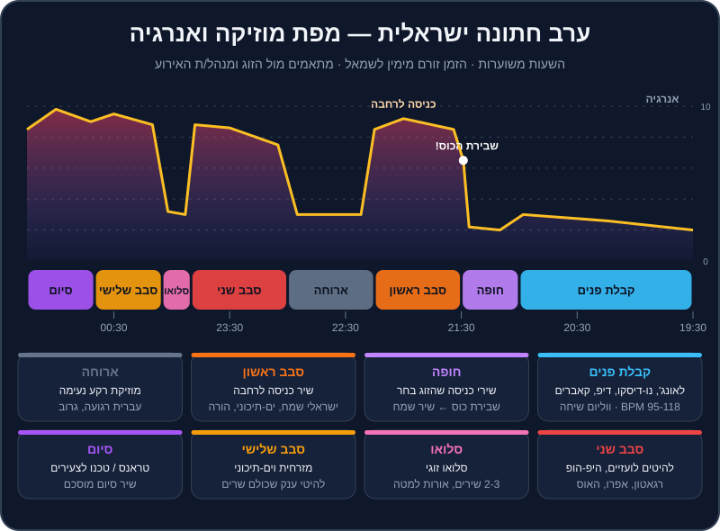

פרק 14 מתוך 20
אירועים וחתונות
Events & Weddings
איך עובד DJ אירועים בישראל: מבנה ערב חתונה מקבלת הפנים ועד סט הטראנס של הסוף, Open Format, עבודה עם הזוג ובקשות שירים, יסודות MC, קטגוריות חובה, ריידר טכני ותוכניות גיבוי.
במועדון, הקהל בא בשבילכם. בחתונה — הקהל בא בשביל הזוג, והוא כולל ילדים בני 8, חברים מהצבא, דודה מאופקים וסבא בן 90. ואתם צריכים שכולם ירקדו. זה עולם אחר: פחות "הסט שלי", יותר שירות, ניהול זמן ורגישות. ובישראל זו גם הדרך העיקרית שבה DJs מתפרנסים.
החדשות הטובות: כל מה שלמדתם עד עכשיו — ביטמאצ'ינג, EQ, הרמוניה, אפקטים, ניהול אנרגיה — עובד גם כאן. רק המשקל של כל כלי משתנה. בפרק הזה נבנה את התמונה המלאה: איך נראה ערב חתונה ישראלית, איך מתכוננים עם הזוג, מה לומר במיקרופון, ומה לעשות כשהמחשב קורס חמש דקות לפני החופה.
מה תלמדו בפרק#
- את המבנה של ערב חתונה ישראלית, שלב אחר שלב — ומה המוזיקה עושה בכל שלב.
- מה זה Open Format, ואיך משנים את הטכניקה לאירועים.
- את קטגוריות החובה שצריכות להיות בספרייה של DJ אירועים בישראל.
- איך עובדים עם הזוג: פגישת תיאום, רשימות "חובה" ו"אסור", ובקשות שירים בזמן אמת.
- יסודות MC: מיקרופון, הכרזות, ומה לא להגיד.
- ריידר טכני, צ'קליסט ציוד ותוכניות גיבוי.
מבנה ערב חתונה ישראלית#

השעות בתרשים משוערות — לכל זוג, לכל אולם ולכל קהילה יש סדר משלו. אבל השלד חוזר על עצמו כמעט בכל חתונה:
1. קבלת פנים (כשעה עד שעה וחצי)#
המטרה: אווירה טובה, אנשים מדברים, אוכלים, מצטלמים. המוזיקה ברקע — אבל היא קובעת את הרושם הראשון.
- מה מנגנים: לאונג', נו-דיסקו, דיפ ואפרו האוס עדינים, קאברים אקוסטיים, סול, ג'אז, ישראלי רגוע. טווח של בערך 95-118 BPM.
- ווליום: ברמת שיחה. אם אנשים צריכים לצעוק כדי לדבר — זה חזק מדי.
- אנרגיה: 2-4, עם עלייה קלה לקראת החופה.
- מהרפו:
house-13,house-12,house-02,house-01,breadth-10(לו-פיי) — כולם במנעד הנכון.
2. חופה (כחצי שעה)#
המטרה: הרגע הרגשי של הערב. כאן אין מקום לטעויות.
- שירי כניסה: בדרך כלל הזוג בוחר מראש — שיר לכניסת החתן, שיר לכניסת הכלה (לפעמים גם להורים ולילדי השושבינים). סמנו Hot Cue בדיוק בנקודה שבה השיר צריך להתחיל — לפעמים לא מתחילת הקובץ.
- מיקרופון לעורך הטקס: ברוב החתונות ה-DJ אחראי לכך שלרב או לעורך הטקס יש מיקרופון אלחוטי עובד, עם סוללות מלאות.
- שבירת הכוס: זה הסימן. ברגע שהכוס נשברת — שיר שמח מתפוצץ (רבים משתמשים ב"סימן טוב ומזל טוב" או בשיר אחר שהזוג בחר). תהיו עם האצבע על הכפתור ועם העיניים על החתן.
- אחרי החופה: מוזיקה שמחה בזמן שהאורחים ניגשים לברך ולהצטלם.
3. כניסה לרחבה וסבב ריקודים ראשון (כ-45 דקות)#
המטרה: הרגע הכי חשוב שלכם בערב. הרחבה חייבת להתמלא — ומהר.
- שיר כניסה לרחבה: הזוג נכנס עם שיר שבחרו (לרוב שיר אנרגטי ומוכר), לעיתים עם עשן, אורות ותשואות. ההכרזה שלכם במיקרופון מתחילה את המסיבה.
- מה מנגנים: ישראלי שמח, ים-תיכוני, להיטים שכולם מכירים, ובחתונות רבות גם מעגלים — "הבה נגילה", "עוד ישמע", מחרוזות חסידיות. הרמות של הזוג על כיסאות.
- קצב: שירים קצרים (1.5-3 דקות כל אחד), מעברים מהירים, אנרגיה 8-9.
- מהרפו לתרגול:
mainstream-13→mainstream-14(transition-09),mainstream-15,mainstream-16.
4. ארוחה (כ-45 דקות)#
המטרה: לתת לאנשים לאכול ולדבר. המוזיקה יורדת לרקע.
- מה מנגנים: עברית רגועה, גרוב, להיטים שקטים, לפעמים בקשות מיוחדות של המשפחה.
- ווליום: נמוך. המלצרים מגישים, האנשים מדברים.
- זה גם הזמן לשתות מים, לבדוק את הסבב הבא, ולאכול משהו (סכמו מראש על ארוחת ספקים).
5. סבב שני (כשעה)#
המטרה: המסיבה של הצעירים — ושל כל מי שרוצה לרקוד.
- מה מנגנים: להיטים לועזיים, היפ-הופ ו-R&B, רגאטון ולטיני, אפרוביטס, פופ דאנס, EDM, והאוס/טק האוס לקהל שאוהב אלקטרוני.
- מבנה: בלוקים של 10-20 דקות לפי סגנון, עם מעברי טמפו וז'אנר (ראו פרק 15).
- מהרפו לתרגול:
mainstream-08,mainstream-10,mainstream-11,mainstream-03,mainstream-04,mainstream-01,mainstream-02.
6. סלואו (רבע שעה בערך)#
רגע זוגי: 2-3 שירים איטיים, אורות למטה. לפעמים זה הריקוד הראשון של הזוג, ולפעמים הוא מגיע מוקדם יותר בערב. אל תשכחו לצאת ממנו — אחרי הסלואו מגיע להיט ענק שמחזיר את כולם לרחבה.
7. סבב שלישי#
ברוב החתונות בישראל: מזרחית וים-תיכוני — להיטי ענק שכולם שרים, מחרוזות, רמיקסים. אנרגיה 9 ומעלה. זה המקום לרמיקסים ים-תיכוניים ב-124-140.
8. סיום#
הצעירים נשארים. בחתונות רבות בישראל הערב נגמר בסט טראנס (או טכנו, לפי הקהל) — ואחריו שיר סיום שהוסכם עם הזוג. צאו מהערב בשיא, לא בדעיכה.
אירועים אחרים בקצרה#
| אירוע | מה מיוחד בו |
|---|---|
| בר/בת מצווה | קהל צעיר מאוד + הורים וסבים. לרוב יש "הדלקת נרות": בני משפחה וחברים נקראים להדליק נר, ולכל אחד מתנגן קטע שיר קצר שנבחר מראש — הכינו פלייליסט מסודר עם Hot Cues. בלוקים של להיטי נוער, EDM, פופ ומשחקים. |
| חינה | מוזיקה מסורתית לפי מוצא המשפחה (מרוקאי, תימני ועוד) + ים-תיכוני. שאלו בדיוק מה המשפחה מצפה לשמוע. |
| אירוע חברה | הרבה רקע ו-networking, נאומים (מיקרופון!), ואולי מסיבה בסוף. חשוב: לוח זמנים מדויק מהמפיק. |
| יום הולדת / מסיבה פרטית | יותר חופש, קהל הומוגני יותר — אבל עדיין: שאלו מה המארח רוצה. |
הטכניקה של אירועים — Open Format#
ב-Open Format מנגנים הכול: ים-תיכוני, היפ-הופ, האוס, רגאטון, פופ, טראנס — לפעמים בתוך חצי שעה. זה משנה את הטכניקה:
| סט קלאב | Open Format באירוע | |
|---|---|---|
| אורך שיר | 4-7 דקות | 1.5-3 דקות |
| מעבר טיפוסי | בלנד של 32-64 תיבות | קאט על ה-1, Echo Out, בלנד של 8 תיבות |
| BPM | זז לאט, 2-3 לכל מעבר | קופץ בין עולמות: 90, 100, 124, 128, 140 |
| הרמוניה | חשובה מאוד | חשובה בבלנדים, פחות בקאטים |
| מה הכי חשוב | זרימה ואווירה | השיר הנכון ברגע הנכון |
| ווקאל | לסירוגין | כמעט כל שיר ווקאלי — אסור לערבב שני ווקאלים |
כללי זהב של Open Format#
- נגנו את החלק הכי טוב. לא צריך לנגן שיר מתחילתו ועד סופו. בית אחד + פזמון + פזמון — ומעבר.
- הכינו נקודות כניסה. Hot Cue על הפזמון, על הדרופ ועל "אינטרו DJ" לכל שיר חשוב.
- בלוקים, לא סלט. 10-20 דקות בסגנון אחד, ואז מעבר מתוכנן לסגנון הבא. קפיצה בכל שיר מבלבלת את הרחבה.
- גרסאות מתאימות. "Clean" (בלי קללות) לאירועים משפחתיים, ואדיטים עם אינטרו ל-DJ מספריות DJ חוקיות (
DJ pools). - הקשיבו לרחבה, לא לפלייליסט. אם בלוק לא עובד אחרי שניים-שלושה שירים — עוברים.
קטגוריות חובה בספרייה#
מי שעובד כ-DJ אירועים בישראל צריך ספרייה רחבה ומסודרת. הנה הקטגוריות — כדאי שכל אחת תהיה פלייליסט נפרד ב-Rekordbox:
| קטגוריה | למה | מתי |
|---|---|---|
| קבלת פנים: לאונג', דיפ, נו-דיסקו, אקוסטי | אווירה ורושם ראשון | תחילת הערב |
| שירי חופה פופולריים | הזוג יבקש, לפעמים ברגע האחרון | חופה |
| שירי "שבירת כוס" ושמחה | הרגע אחרי החופה | סוף החופה |
| כניסות לרחבה | אנרגיה מיידית | כניסת הזוג |
| ישראלי שמח וקלאסיקות | מאחד את כל הגילאים | סבב ראשון |
| מעגלים / חסידי / הורה | מסורת, רגעי שיא קבוצתיים | סבב ראשון |
| ים-תיכוני ומזרחית: שירים ורמיקסים | הלב של רוב האירועים | סבב ראשון ושלישי |
| להיטים לועזיים (פופ, דאנס) | צעירים ומבוגרים מכירים | סבב שני |
| היפ-הופ ו-R&B | קהל צעיר | סבב שני |
| לטיני ורגאטון | ממלא רחבות | סבב שני |
| אפרוביטס ואפרו האוס | טרנדי, אנרגטי | סבב שני |
| EDM וקלאסיקות פסטיבלים | בר מצוות, צעירים | סבב שני / סיום |
| נוסטלגיה (שנות ה-80, 90, 2000) | ההורים על הרחבה | בכל סבב, במנות קטנות |
| סלואו | רגע זוגי | אמצע/סוף |
| טראנס וטכנו לסוף | הצעירים שנשארו | סיום |
| "מצילים" | שירים שתמיד עובדים כשהרחבה מתרוקנת | בכל רגע |
עבודה עם הזוג (והלקוח)#
פגישת תיאום — הצ'קליסט#
כחודש עד שבועיים לפני האירוע, שבו עם הזוג (פגישה או שיחת וידאו) ועברו על:
- לוח זמנים: שעת הגעה שלכם, קבלת פנים, חופה, כניסה לרחבה, ארוחה, סיום. ומי מנהל/ת האירוע מטעם האולם — שם וטלפון.
- שירי חופה: כניסת חתן, כניסת כלה, אחרים (הורים, ילדים), שבירת כוס. גרסה מדויקת (קישור), ומאיפה בשיר להתחיל.
- כניסה לרחבה: השיר, והאם יש עשן/זיקוקים/אורות.
- ריקוד ראשון / סלואו — האם יש, ומתי.
- רשימת "חובה" — 10-20 שירים שחייבים להתנגן.
- רשימת "אסור" — לא פחות חשובה! שירים שמזכירים אקסים, שירים שהזוג שונא, סגנונות שלא מתאימים.
- חלוקת סגנונות — כמה ים-תיכוני, כמה לועזי, כמה אלקטרוני. מה הקהל (גילאים, מוצא, דתיות)?
- בקשות משפחתיות — "השיר של סבתא", שיר מיוחד לאמא.
- הנחיה (MC) — מה להכריז, איך מבטאים את השמות, האם יש נאומים או ברכות.
- רישיון אקו"ם — מי מסדיר. לפי אקו"ם, החובה חלה על בעל השמחה (ולעיתים האולם או ה-DJ מסדירים בשבילו) — כתבו בחוזה מי אחראי. באתר אקו"ם מופיע תעריף לאירוע משפחתי (בסביבות 400 ₪, נכון ל-2025), ויש להסדיר אותו מראש. בדקו את התעריף העדכני.
- ציוד — מה האולם מספק (הגברה, תאורה, מסכים) ומה אתם מביאים.
בקשות שירים בזמן אמת#
- הקשיבו, תמיד. גם אם לא תנגנו בדיוק את הבקשה — היא מידע על מה שהקהל רוצה.
- "בטח, תכף" — אם השיר מתאים, שבצו אותו בבלוק הנכון. אל תקפצו מיד באמצע בלוק אחר.
- סירוב מנומס — אם השיר ברשימת ה"אסור" של הזוג, או ממש לא מתאים: "הזוג ביקש שלא, סליחה!" עובד כמעט תמיד.
- בעדיפות לזוג ולהורים. בקשה של אמא של הכלה גוברת על בקשה של חבר שיכור.
- אל תתנו לאף אחד לגעת בציוד. "תן לי רגע לשים משהו מהטלפון" — לא.
יסודות MC — לדבר במיקרופון#
בישראל, DJ אירועים הוא כמעט תמיד גם ה-MC. זה לא אומר להיות מנחה של תוכנית בידור — רק להוביל את הערב בביטחון.
טכניקה#
- אחזו במיקרופון 2-5 ס"מ מהפה, מכוון ישר לפה. אל תכסו את הראש של המיקרופון ביד (זה גורם לשריקות).
- הנמיכו את המוזיקה בערך ב-10 dB לפני שמדברים — או עשו את ההכרזה על אינטרו בלי ווקאל.
- אל תעמדו מול הרמקולים עם המיקרופון — זה מתכון לשריקה (
feedback). - דברו לאט, קצר וברור. משפט-שניים. עדיף לשתוק מאשר למלמל.
- בדקו את המיקרופון בסאונד צ'ק, וגם סוללה רזרבית בכיס.
הכרזות לדוגמה#
- "ערב טוב לכולם, ברוכים הבאים! בעוד כרבע שעה נתחיל את החופה — נבקש מכולם להתקרב לאזור החופה."
- "גבירותיי ורבותיי… קבלו בתשואות סוערות את החתן והכלה!" — ואז הדרופ.
- "זה הזמן לרקוד — כולם לרחבה!"
- "אנחנו מזמינים את המשפחה לרחבה לריקוד משפחתי."
- "תודה רבה לכולם, היה ערב מושלם — מזל טוב!"
ריידר טכני וציוד#
ריידר (rider) הוא מסמך שמפרט מה אתם צריכים כדי לעבוד: ציוד, חשמל, שטח, זמנים. גם אם האולם מספק את רוב הדברים — שלחו ריידר. הוא חוסך הפתעות.
| פריט | אירוע קטן (50-150) | חתונה (300-600) |
|---|---|---|
| רמקולים | שני רמקולים פעילים + סאב אחד | מערכת גדולה (רמקולים + 2 סאבים או יותר), לרוב של ספק הגברה |
| עמדת DJ | שולחן יציב, כ-1.5-2 מ' | עמדה מסודרת עם מקום לשני מחשבים |
| קונטרולר / מיקסר | שלכם | שלכם או של האולם (CDJs + מיקסר) |
| מחשב | ראשי + גיבוי (טלפון/טאבלט עם פלייליסט חירום) | ראשי + מחשב גיבוי או USB לנגני CDJ |
| מיקרופונים | 1 אלחוטי + 1 חוטי | 2 אלחוטיים (DJ + חופה) + 1 חוטי |
| מוניטור | רצוי | חובה |
| חשמל | שקע נפרד ליד העמדה | מעגל חשמל נפרד, רחוק מהמטבח והתאורה |
| אל-פסק (UPS) | מומלץ | חובה |
| כבלים | XLR, RCA, USB, מתאמים, מפצלים | כפול מכל דבר |
| תאורה ואפקטים | לפי הצורך | לרוב חברת הפקה |
| זמן הקמה | שעה לפני קבלת הפנים | שעתיים לפחות, כולל סאונד צ'ק |
תוכניות גיבוי — כי זה יקרה#
בחתונה אין "בואו נתחיל מחדש". הנה מה ש-DJs מנוסים עושים:
- שני מקורות מוזיקה. אם המחשב קורס — טלפון או טאבלט עם פלייליסט של 30 דקות, מחובר לערוץ פנוי במיקסר, מוכן.
- שני USB עם ספרייה מיוצאת מ-Rekordbox (אם יש באולם נגני CDJ).
- הספרייה כולה מקומית. אל תסתמכו על סטרימינג או על ה-Wi-Fi של האולם.
- טראק חירום ארוך טעון בדק השני — שיר של 6-7 דקות שאפשר להפעיל ברגע.
- אל-פסק למחשב ולקונטרולר. הפסקת חשמל של שנייה לא תפיל לכם את המערכת.
- כבלים ומתאמים כפולים, אוזניות רזרביות, סוללות למיקרופונים, מפצל חשמל.
- לוח זמנים מודפס עם הטלפונים של מנהל/ת האירוע, הזוג (או נציג), וספק ההגברה.
- שירי החופה בשלושה מקומות: בפלייליסט, על USB, ובטלפון.
תרגילים#
סיכום#
- חתונה ישראלית: קבלת פנים, חופה, כניסה לרחבה וסבב ראשון, ארוחה, סבב שני, סלואו, סבב שלישי וסיום (לרוב בטראנס).
- ב-Open Format: שירים קצרים, נקודות כניסה מוכנות, בלוקים לפי סגנון, וקאטים ו-Echo Out מדויקים.
- ספרייה מסודרת לפי קטגוריות, כולל "מצילים", גרסאות Clean, ושירי חופה בכמה גיבויים.
- פגישת תיאום, רשימות "חובה" ו"אסור", וסיכום כתוב — מונעים כמעט כל בעיה.
- הנחיה (MC) טובה: קצרה, ברורה, מוזיקה מונמכת, שמות מבוטאים נכון.
- ריידר, ציוד כפול, אל-פסק, ותוכנית חירום — כי משהו תמיד משתבש.
בפרק הבא נלמד את הכלי שהכי חשוב באירועים: לעבור בין עולמות — מרגאטון ב-95 להאוס ב-124 — בלי שהרחבה תרגיש "בור". ← פרק 15: מעברי טמפו וז'אנר